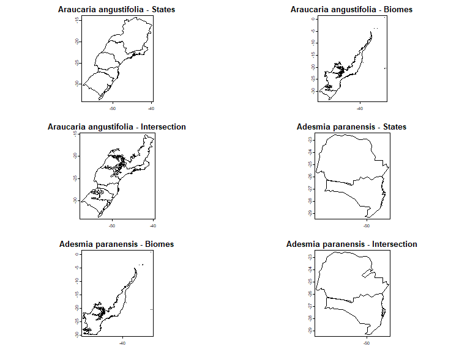

3. Using florabr to flag erroneous records
Source:vignettes/Spatialize_florabr.Rmd
Spatialize_florabr.RmdLoading data
Before you begin, use the load_florabr function to load
the data. For more detailed information on obtaining and loading the
data, please refer to 1. Getting started
with florabr
library(florabr)
library(terra)
#Folder where you stored the data with the function get_florabr()
#Load data
bf <- load_florabr(data_dir = my_dir,
data_version = "Latest_available",
type = "short") #short version
#> Loading version 393.389Get spatial polygons of species distribution
Brazilian Flora 2020 provides information on the federal states and
biomes with confirmed occurrences of the species in Brazil. The
get_spat_occ function extracts these information and return
Spatial polygons (SpatVectors) representing the distribution of the
specie. We can choose getting the Spatialvector of the federal states,
biomes and the intersection between states and biomes.
#Example species
spp <- c("Araucaria angustifolia", "Adesmia paranensis")
#Get spatial polygons
spp_spt <- get_spat_occ(data = bf, species = spp,
State = TRUE, Biome = TRUE, intersection = TRUE,
verbose = TRUE)
#> Getting states of Araucaria angustifolia
#> Getting biomes of Araucaria angustifolia
#> Getting biomes of Araucaria angustifolia
#> Getting states of Adesmia paranensis
#> Getting biomes of Adesmia paranensis
#> Getting biomes of Adesmia paranensisThe SpatVectors are stored in a nested list by species:
par(mfrow = c(3, 2), mar = c(2, 0, 2, 0))
plot(spp_spt$`Araucaria angustifolia`$States,
main = paste0(names(spp_spt)[[1]], " - States"), mar = NA)
plot(spp_spt$`Araucaria angustifolia`$Biomes,
main = paste0(names(spp_spt)[[1]], " - Biomes"), mar = NA)
plot(spp_spt$`Araucaria angustifolia`$States_Biomes,
main = paste0(names(spp_spt)[[1]], " - Intersection"), mar = NA)
plot(spp_spt$`Adesmia paranensis`$States,
main = paste0(names(spp_spt)[[2]], " - States"), mar = NA)
plot(spp_spt$`Adesmia paranensis`$Biomes,
main = paste0(names(spp_spt)[[2]], " - Biomes"), mar = NA)
plot(spp_spt$`Adesmia paranensis`$States_Biomes,
main = paste0(names(spp_spt)[[2]], " - Intersection"), mar = NA)
Including a more complex polygon of states and biomes
As default, florabr uses a simplified polygon of federal
States and biomes, with a reduced number of nodes representing the
boundaries of states and biomes (check
?terra::simplifyGeom):
data("states")
states <- terra::unwrap(states)
data("biomes")
biomes <- terra::unwrap(biomes)
par(mfrow = c(2, 1), mar = c(0, 0, 0, 0))
plot(states, main = "Brazilian states with simplified geometries")
plot(biomes, main = "Brazilian biomes with simplified geometries")
We can work with the original spatial polygons, which represents
better the real shapes and boundaries of states and biomes. To do that,
let’s get the original data from geobrpackage:
#Install geobr if necessary and load package
if(!require(geobr)){
install.packages("geobr")
}
#Load geobr
library(geobr)Let`s start with the polygon of federal states of Brazil:
br_states <- geobr::read_state(simplified = FALSE)
#Convert br_states from sf to SpatVect
br_states <- vect(br_states)Note that now, the geometries of br_states (not simplified) are more complex than the simplified states:
#Plot only State of Parana as example
par(mfrow = c(1, 2), mar = c(2, 2, 2, 2))
plot(br_states[br_states$abbrev_state == "PR"],
main = "Not simplified geometries", mar = NA)
plot(states[states$abbrev_state == "PR"],
main = "Simplified geometries",
mar = NA) Now, let’s get the
original polygons of biomes:
Now, let’s get the
original polygons of biomes:
br_biomes <- geobr::read_biomes()
#Convert br_biomes from sf to SpatVect
br_biomes<- terra::vect(br_biomes)
#Drop off coastal system:
br_biomes <- terra::subset(br_biomes,
br_biomes$name_biome != "Sistema Costeiro")The names of the biomes are in Portuguese. We need to translate Amazonia and Mata Atlantica to English to match with the names in Brazilian Flora database:
#See names of biomes
br_biomes$name_biome
#Names that must be in the Spatvector to match with Brazilian Flora:
biomes$name_biome
#> [1] "Amazônia" "Caatinga" "Cerrado" "Mata Atlântica"
#> [5] "Pampa" "Pantanal"
#Translate
br_biomes$name_biome[which(br_biomes$name_biome == "Amazônia")] <- "Amazon"
br_biomes$name_biome[which(
br_biomes$name_biome == "Mata Atlântica")] <- "Atlantic_Forest"Now, the SpatVector of biomes is also ready to use. Let’s see the
difference when we use this non-simplified Spatvectors in the
get_spat_occ:
spp_spt_2 <- get_spat_occ(data = bf, species = spp,
State = TRUE, Biome = TRUE, intersection = TRUE,
State_vect = br_states, #The non-simplified Spatvector
state_column = "abbrev_state", #Column name with states acronyms
Biome_vect = br_biomes, #The non-simplified Spatvector
biome_column = "name_biome", #Column name with names of biomes
verbose = TRUE)See the difference: now, the polygons representing the distribution of species in states and biomes are more complex:
par(mfrow = c(2, 2), mar = c(2, 2, 2, 2))
plot(spp_spt$`Araucaria angustifolia`$States,
main = paste0(names(spp_spt)[[1]], " - States simplified"), mar = NA)
plot(spp_spt_2$`Araucaria angustifolia`$States,
main = paste0(names(spp_spt)[[1]], " - States non-simplified"), mar = NA)
plot(spp_spt$`Araucaria angustifolia`$Biomes,
main = paste0(names(spp_spt)[[1]], " - Biomes simplified"), mar = NA)
plot(spp_spt$`Araucaria angustifolia`$Biomes,
main = paste0(names(spp_spt)[[1]], " - Biomes non-simplified"), mar = NA)
The choose between using the simplified version (default) or using a personal e more complex polygons depends on the objectives and resolution of your work. For a objective that depends on more fine resolution, we suggest to use more complex polygons that represent better the real shapes and boundaries of states and biomes.
Filtering occurrence records using distribution information in Brazilian Flora
Georeferencing errors in online species records can introduce
significant bias into ecological and biogeographical research findings.
Some R packages, as CoordinateCleaner, help to flagging
common spatial errors in biological collection data, for example,
records of terrestrial organism that fall in the sea or were assigned to
capital and province centroids. Since the distributions of species in
Brazilian Flora are based on the expertise of taxonomists, it represents
a valuable information to add an additional step on checking the
validity of occurrence records got from online databases (as GBIF or
SpeciesLink). The filter_florabr function automatized this
flagging. You can use the function to flag and/or remove: * Records that
fall outside the states and biomes which confirmed occurrence according
to Brazilian Flora. * For species endemic to Brazil, records that falls
in other countries.
As example, let’s use the occurrence records of two species.
Abatia americana is an endemic shrub with confirmed occurrences
in 4 states (ES, MG, RJ and SP) and two biomes (Atlantic Forest and
Cerrado). Araucaria angustifolia is a non-endemic tree that in
Brazil has confirmed occurrences in 6 states (MG, PR, RJ, RS, SC and SP)
and two biomes (Atlantic Forest and Pampa). Let’s plot these information
using the function get_spat_occ:
my_spp <- c("Abatia americana", "Araucaria angustifolia")
pol_spp <- get_spat_occ(data = bf, species = my_spp,
State = TRUE, Biome = TRUE, intersection = TRUE,
verbose = TRUE)
par(mfrow = c(2, 2), mar = c(2, 0, 2, 0))
plot(pol_spp$`Abatia americana`$States,
main = paste0(names(pol_spp)[[1]], " - States"), mar = NA)
plot(pol_spp$`Abatia americana`$Biomes,
main = paste0(names(pol_spp)[[1]], " - Biomes"), mar = NA)
plot(pol_spp$`Araucaria angustifolia`$States,
main = paste0(names(pol_spp)[[2]], " - States"), mar = NA)
plot(pol_spp$`Araucaria angustifolia`$Biomes,
main = paste0(names(pol_spp)[[2]], " - Biomes"), mar = NA) We downloaded the
occurrences of these two species from GBIF using the
We downloaded the
occurrences of these two species from GBIF using the
plantR::rgbif2() function. These occurrences are saved as
data examples in the package and we can import it:
data("occurrences")
#select Abatia americana and Araucaria angustifolia from the dataset
occ <- subset(occurrences, occurrences$species %in% my_spp)
head(occ)
#> species x y
#> 1 Araucaria angustifolia -51.15749 -29.58290
#> 2 Araucaria angustifolia -50.02454 -28.44414
#> 3 Araucaria angustifolia -46.77204 -23.45729
#> 4 Araucaria angustifolia -48.98117 -25.49632
#> 5 Araucaria angustifolia -54.50869 -25.55113
#> 6 Araucaria angustifolia -50.92680 -27.01826The input data with records must be a dataframe with at least 3 columns: one informing the species name, one informing the longitude and one informing the latitude. Let’s check if there are records outside of the species’ natural ranges considering states, biomes and endemism:
occ_check <- filter_florabr(data = bf, occ = occ,
by_State = TRUE, buffer_State = 20,
by_Biome = TRUE, buffer_Biome = 20,
by_Endemism = TRUE, Buffer_Brazil = 20,
State_vect = NULL,
Biome_vect = NULL, BR_vect = NULL,
value = "flag&clean", keep_columns = TRUE,
verbose = FALSE)
#> Returning list with flagged and cleaned occurrencesSince we set value = “flag&clean”, the function returned a list with two data.frames: one with all the records flagged if on each test they passed (TRUE) or not (FALSE); and another with only the records that passed in all tests.
Let’s use the mapview package to plot an interactive map of the flagged records:
#Install mapview if necessary and load package
if(!require(mapview)){
install.packages("geobr")
}
#Load mapview
library(mapview)Let’s check the records of Abatia americana, plotting the records and the map got previously. You can see that the green records passed on the test of States, falling in the states with confirmed occurrence of the specie. The red dots are the records that falls outside the states. And the gray dots are records that was not testes because they falls outside Brazil (Ecuador and Belarus).
#Convert points to spatvector
abatia_occ <- subset(occ_check$flagged,
occ_check$flagged$species == "Abatia americana")
abatia_occ <- vect(abatia_occ, geom = c("x", "y"))
#Iteractive plot
mapview(pol_spp$`Abatia americana`$States) +
mapview(abatia_occ, zcol = "Inside_State",
col.regions = c("red", "green"))
We can see the same with biomes: green dots represents records that passed in the test, green dots represents records that did not passed the test, and gray dots are records not tested because they fall outside Brazil.
#Iteractive plot
mapview(pol_spp$`Abatia americana`$Biomes) +
mapview(abatia_occ, zcol = "Inside_Biome",
col.regions = c("red", "green"))
Finally, since Abatia americana is a specie endemic to Brazil, we don’t expect records outside the country. The records in Ecuador and Belarus were flagging in this test:
#Get Brazl Polygon
br <- geobr::read_country()
#Iteractive plot
mapview(br) +
mapview(abatia_occ, zcol = "Inside_BR",
col.regions = c("red", "green"))